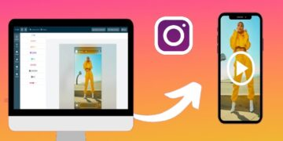

Fotos para Instagram: 26 ideias para ter um perfil atrativo
Se a primeira impressão é a que fica, qual você tem deixado por meio das fotos para Instagram? O aspecto visual ainda é bastante valorizado na plataforma, pois é sua essência original. Assim, você precisa deixar seu perfil atrativo para o público. Quando foi criado, há mais de uma década, o Instagram era uma rede […]

Como fazer parceria no Instagram: 6 ações para fechar um ótimo negócio!
“Como fazer parceria no Instagram” é uma pergunta bem comum entre profissionais e empresas que buscam encontrar formas de alavancar seus resultados. Inclusive, na própria rede social. Isso porque, o marketing de influência cresceu demasiadamente nos últimos anos. O público que acompanha os influenciadores digitais é enorme e apresenta um forte engajamento, o que molda […]

Como vender pelo Instagram: conheça 11 táticas comprovadas!
Atualmente, comercializar pela internet é o objetivo de muitos profissionais e empreendedores. Afinal, há um oceano de possibilidades no digital para alavancar seus resultados. Assim, se torna essencial você aprender como vender pelo Instagram. Uma pesquisa do Sebrae em parceria com a FGV (Fundação Getúlio Vargas), relata que 70% das empresas posicionaram-se nas redes sociais […]

Como impulsionar no Instagram em 7 passos simples
De fato, o marketing de conteúdo e outras estratégias orgânicas para gerar tráfego na rede social são bastante efetivas. Porém, para alcançar resultados realmente expressivos, você precisa entender como impulsionar no Instagram. Estudos apontam que o algoritmo da plataforma costuma entregar uma publicação para menos de 10% do seu público de forma orgânica. E a […]

207 melhores perguntas para fazer no stories e bombar seu perfil
O Stories é a principal maneira de gerar engajamento para seu perfil na rede social. Você pode publicar textos, imagens e vídeos, assim como, postar perguntas para fazer no Instagram, na enquete, teste ou caixinha de perguntas. Tudo isso colabora para que você crie uma relação de confiança com o seu público, o que é […]

Aprenda como postar no Instagram pelo PC em 5 minutos
Embora o aplicativo do Instagram seja ótimo, para quem usa a plataforma para monetizar, o computador ou notebook mostra-se bem mais prático. Por isso, é importante você entender como postar no Instagram pelo PC. Até pouco tempo atrás, não havia nenhuma forma nativa da rede social para publicar conteúdos na versão desktop. O usuário só […]

Mensagem automática Instagram: a estratégia que fará seu perfil bombar
Por mais dedicado que um profissional ou empresa seja com seu perfil na rede social, uma hora ou outra fica difícil lidar com tantas solicitações. Por isso, investir na mensagem automática Instagram pode ser uma ótima solução para você. A construção de um engajamento forte no Instagram depende do quanto a marca estimula a interação […]

6 melhores ferramentas de automação para Instagram em 2022
Que o Instagram é uma rede social cheia de funções para impulsionar seus resultados, você já sabe, não é? Mas o que talvez desconheça é que há diversas ferramentas de automação Instagram para otimizar seu processo de crescimento. Embora seja essencial, gerenciar um perfil no Instagram não costuma ser uma tarefa nada fácil para o […]
Qual o tamanho ideal para seu post no Instagram?
Uma coisa é certa: publicações bem feitas na rede social geram impacto no público, resultando em mais seguidores, engajamento, vendas e valorização da marca. Assim, você precisa entender qual o tamanho post Instagram ideal. O aspecto visual é extremamente importante nas plataformas digitais, ainda mais no Instagram, pois é uma rede social originalmente de fotos. […]

Quantas pessoas posso seguir por dia no Instagram: existe um limite?
Apesar do Instagram ser uma rede social intuitiva na maioria de suas funções, existem particularidades que geram dúvidas para os usuários, como, por exemplo: quantas pessoas posso seguir por dia no Instagram. É indispensável conhecer detalhe por detalhe da plataforma. Principalmente, se você utiliza o Instagram para monetizar seu perfil, pois parte de sua lucratividade […]

Como criar conteúdo no Instagram: as melhores estratégias para 2022
Embora seja necessário, produzir conteúdo na rede social não é uma tarefa nada fácil para profissionais, a exemplo de Social Media, e empresas. Não à toa, muitos perguntam-se: como criar conteúdo no Instagram. Gerar valor é um dos principais princípios para obter sucesso no marketing digital. Sendo o único caminho para conquistar atenção e confiança […]

6 passos para planejar um cronograma de postagens Instagram
Planejar um cronograma de postagens Instagram tornou-se indispensável para que todos que utilizam a plataforma mantenham impressões e engajamento em contínuo crescimento. Sobretudo, aos perfis dedicados a monetizar no Instagram, isto é, empresas e profissionais. Por mais que a criatividade origine-se de uma tempestade de ideias, você só pode sintetizá-la em resultados quando forma um […]